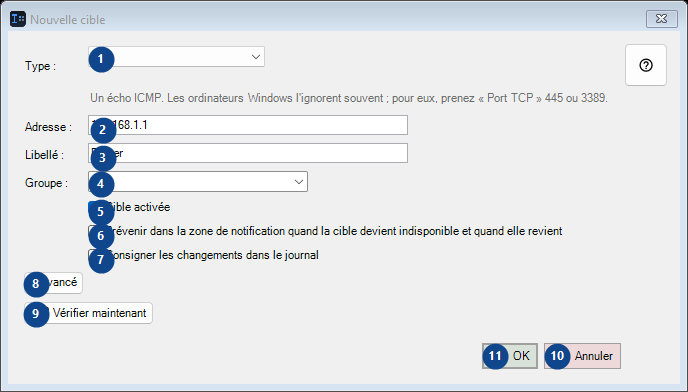
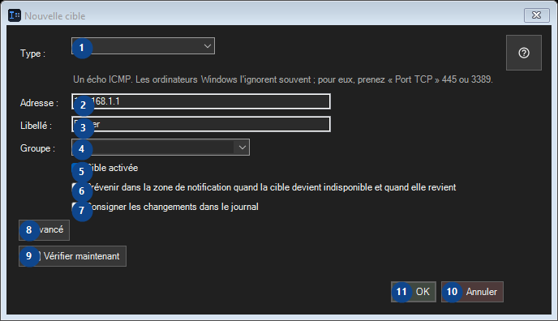

Nouvelle cible
À quoi cela sert
Lisez les explications numérotées, choisissez les valeurs voulues, puis continuez avec la commande de la fenêtre.


Ordre des actions
Lisez les explications numérotées, choisissez les valeurs voulues, puis continuez avec la commande de la fenêtre.
Éléments
1. Type :
Choisissez ou saisissez la valeur indiquée par le libellé voisin. Vérifiez-la avant de continuer.
Vos raccourcis2. Type :
Choisissez ou saisissez la valeur indiquée par le libellé voisin. Vérifiez-la avant de continuer.
Vos raccourcis3. Type :
Choisissez ou saisissez la valeur indiquée par le libellé voisin. Vérifiez-la avant de continuer.
Vos raccourcis4. Type :
Choisissez ou saisissez la valeur indiquée par le libellé voisin. Vérifiez-la avant de continuer.
Vos raccourcis5. Cible activée
Utilisez cette commande pour l’action indiquée. Lisez toute confirmation avant de l’accepter.
Vos raccourcis6. Prévenir dans la zone de notification quand la cible devient indisponible et quand elle revient
Utilisez cette commande pour l’action indiquée. Lisez toute confirmation avant de l’accepter.
Vos raccourcis7. Consigner les changements dans le journal
Utilisez cette commande pour l’action indiquée. Lisez toute confirmation avant de l’accepter.
Vos raccourcis8. ▸ Avancé
Utilisez cette commande pour l’action indiquée. Lisez toute confirmation avant de l’accepter.
Vos raccourcis9. Vérifier maintenant
Utilisez cette commande pour l’action indiquée. Lisez toute confirmation avant de l’accepter.
Vos raccourcis10. Annuler
Utilisez cette commande pour l’action indiquée. Lisez toute confirmation avant de l’accepter.
Vos raccourcis11. OK
Utilisez cette commande pour l’action indiquée. Lisez toute confirmation avant de l’accepter.
Vos raccourcis